Ford Expedition Limited 4WD 2019 (Wersja USA)
Potężny SUV, Luksus i Przestrzeń!
Na sprzedaż wyjątkowy, pełnowymiarowy amerykański SUV - Ford Explorer Limited 4WD z 2019 roku, w topowej wersji wyposażenia i z rzadko spotykaną konfiguracją 6-osobową (fotele kapitańskie w drugim rzędzie).
Kluczowe Parametry:
Rocznik: 2019
Model: Expedition Limited 4WD
Silnik: 3.5L V6
Moc: 290 KM
Skrzynia biegów: Automatyczna 10-biegowa
Napęd: 4x4 (4WD)
Konfiguracja wnętrza: 6-osobowa (Kapitańskie fotele w II rzędzie)
Fotele Kapitańskie (6 miejsc): Zapewniają nieporównywalny komfort pasażerom drugiego rzędu.
Komfort: Wentylowane i podgrzewane fotele przednie, podgrzewana kierownica, trzystrefowa klimatyzacja automatyczna, podgrzewane fotele w II rzędzie.
Technologia: System Infotainment SYNC 3, Nawigacja, Premium Audio System (B&O lub podobny), porty USB, ładowanie bezprzewodowe (jeśli jest).
Bezpieczeństwo i Asystenci: Kamera cofania, czujniki parkowania (przód/tył), system monitorowania martwego pola (BLIS), system Pre-Collision Assist, adaptacyjny tempomat .
Luksus: Panoramiczny dach (opcja, proszę potwierdzić obecność), skórzana tapicerka, regulowane elektrycznie pedały.
Praktyczność: Elektrycznie składany trzeci rząd siedzeń (PowerFold), ogromna przestrzeń bagażowa.
Więcej informacji udzielę telefonicznie.
Pozdrawiam
Niniejsza oferta ma charakter informacyjny i nie stanowi oferty w myśl Art.66, § 1. Kodeksu Cywilnego.
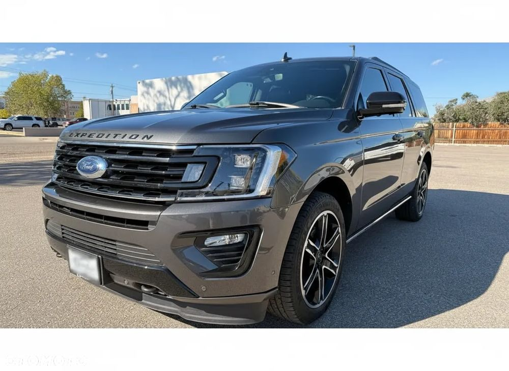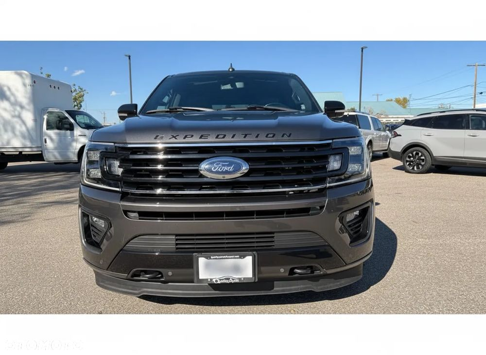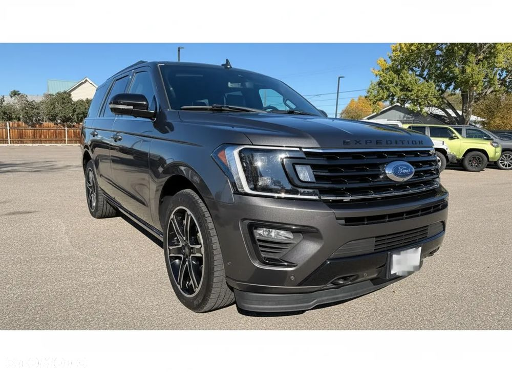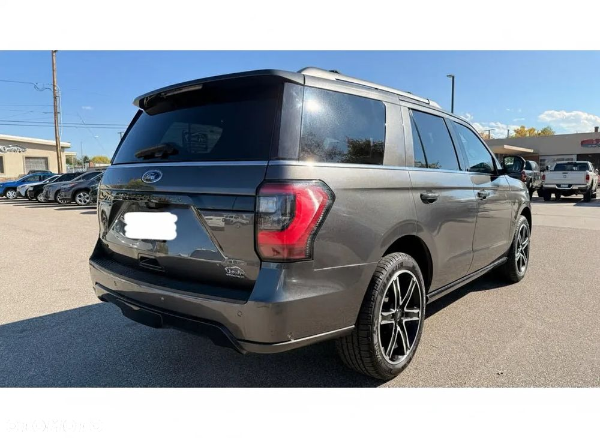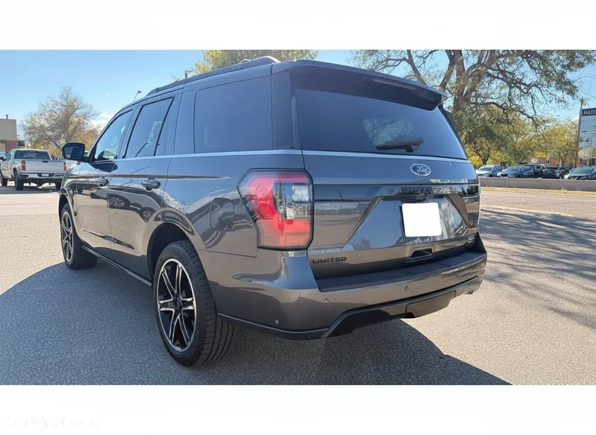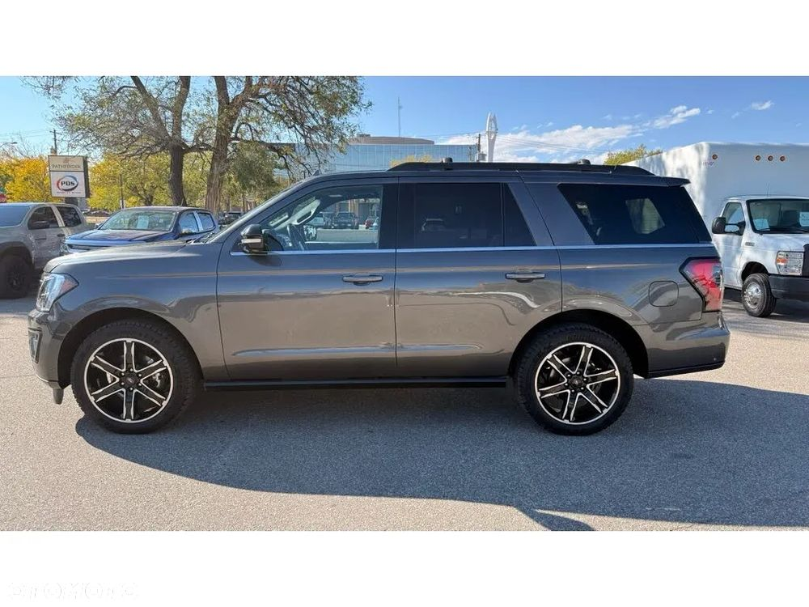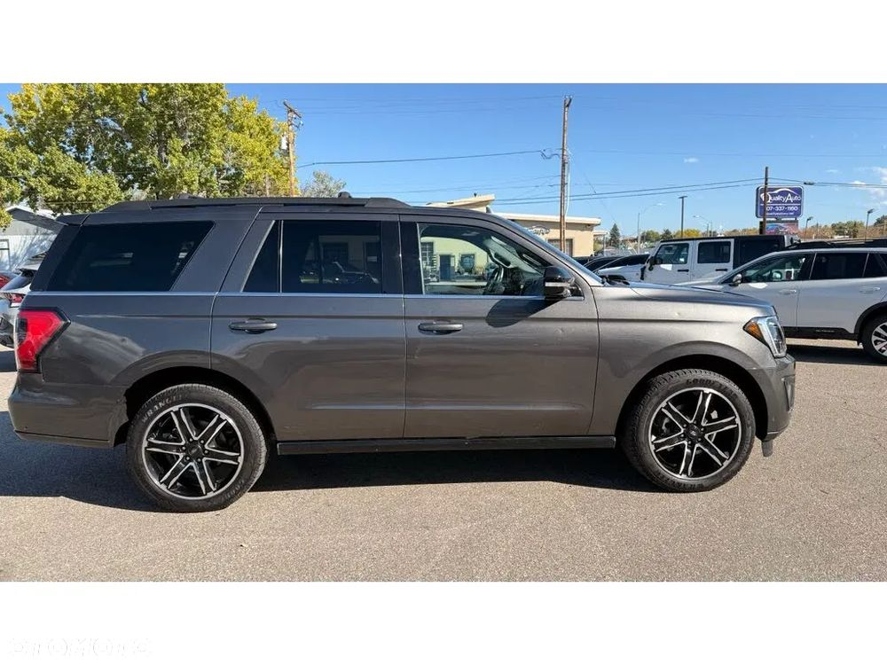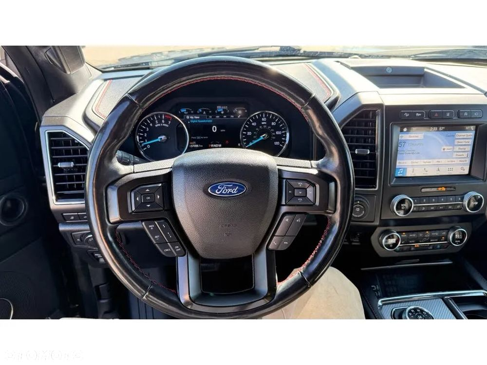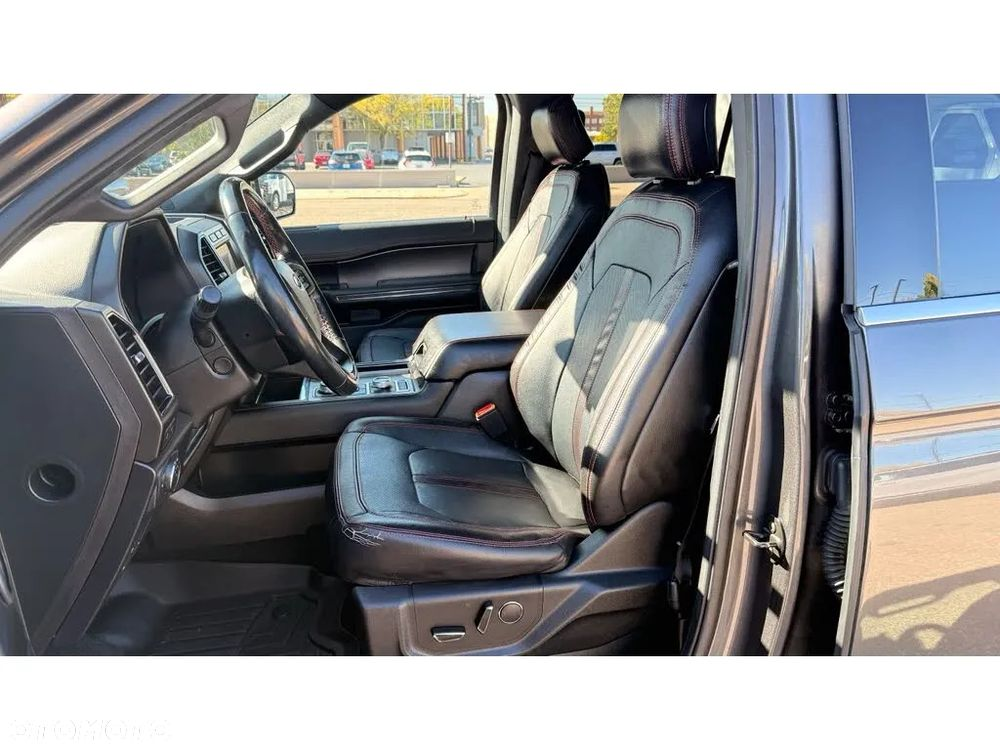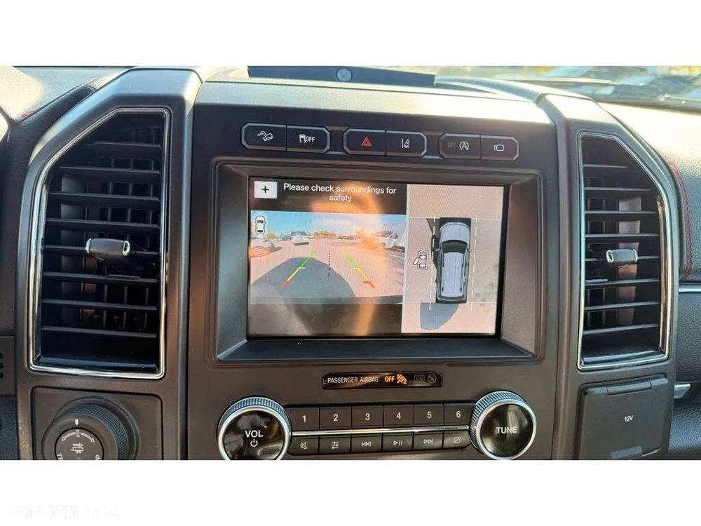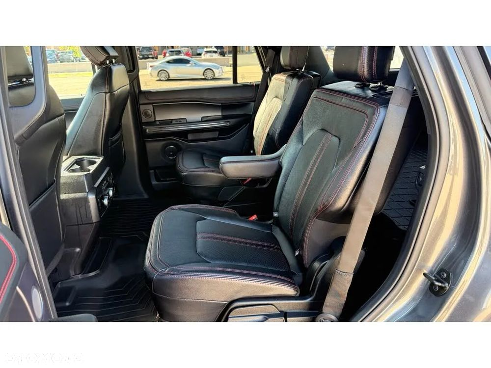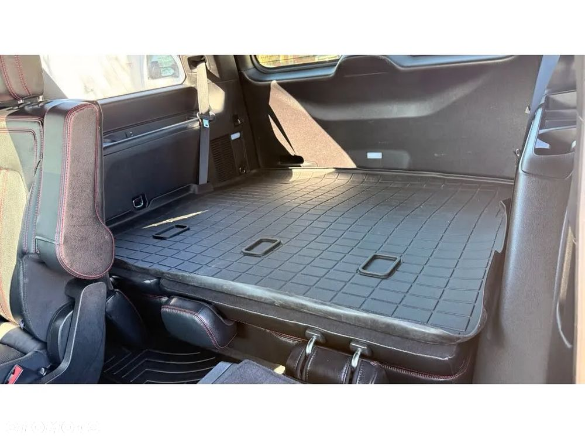